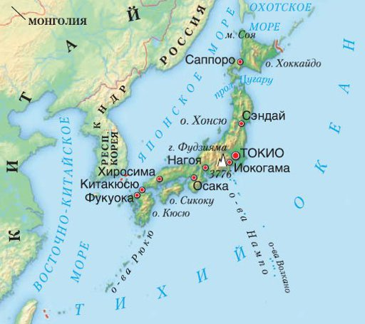

Японія — це острівна країна, розташована вздовж тихоокеанського узбережжя Східної Азії.
Основні острови — Хоккайдо, Хонсю, Сікоку і Кюсю. Острови Рюкю (Окінава) лежать на 600 км південніше острова Кюсю.
У цілому, Японський архіпелаг складається приблизно з 3000 малих островів.
Острів Сахалін є частиною японського архіпелагу, але нині знаходиться під контролем Росії.
Японське і аїнське населення було депортовано на Хоккайдо, міста на острові перейменовано, японську архітектуру знищено.
Японія посідає 19 місце за щільністю населення у світі.
70—80 % поверхні островів вкривають ліси і гори, непридатні для сільського господарства, промисловості чи мешкання через часті тайфуни, зсуви і землетруси.
Більшість населення сконцентровано у прибережних зонах та на рівнинах.
Розташування Японії на стику трьох тектонічних плит Тихого океану є причиною частих землетрусів і підвищеної вулканічної активності на архіпелазі.
Найвищою горою-вулканом країни є гора Фудзі, висота якої становить 3776 м. Останні найбільші землетруси сталися 1995 (землетрус в Кобе), 2004 (землетрус в Ніїґата), а також 2011 років.
Існує багато гейзерів і гарячих природних ванн онсен, які використовують для відпочинку.
